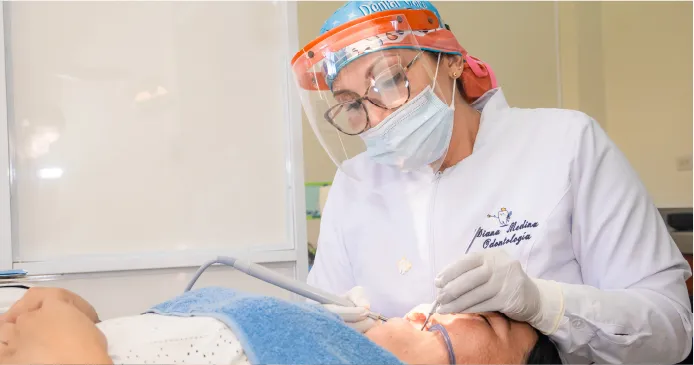
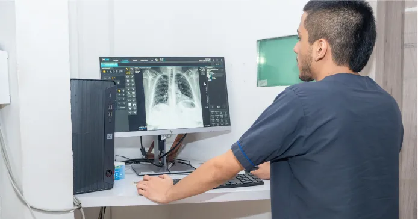
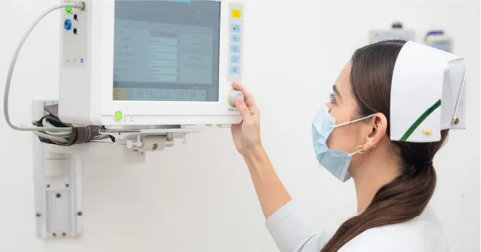

Hospital Departamental San Antonio — Sitio Oficial


Actualización por el Sismo en Roldanillo
El Hospital Departamental San Antonio continúa informando a la comunidad sobre la atención de servicios, jornadas de salud y la campaña de donaciones tras la emergencia.
Noticias y Eventos
Mantente al día con las últimas novedades y actividades del Hospital Departamental San Antonio.
Cargando noticias…
Resultados de Rayos X
Consulta tus resultados de imágenes diagnósticas de forma rápida y segura. Escanea el código QR o accede directamente a la plataforma.
Nuestros Servicios
Descubre los principales servicios que ofrece el Hospital Departamental San Antonio, diseñados para cuidar tu salud con la más alta calidad y un enfoque humano.
Urgencias 24/7
Más información
Cuidado Oral
Más información
Diagnóstico
Más información
Hospitalización
Más informaciónLaboratorio
Más informaciónPartos
Más información
Promoción y Prevención
Más informaciónQuiénes Somos
Conoce nuestra misión, visión, valores y eslogan en la sección de Transparencia.
Ver Misión, Visión y ValoresHistoria y Evolución

Somos una empresa de servicios de Salud fundada en el año 1940, tradicional y competente, acorde con la normatividad que exige la ley 100 de 1.993. Hacemos parte de la red estatal de instituciones de salud, y hemos venido ampliando nuestro oferta de servicios en respuesta a la creciente demanda de la comunidad Roldanillense y de los Municipios del Centro y Norte del Valle del Cauca
El origen del Hospital está ligado al esfuerzo de los habitantes del municipio de Roldanillo quienes en el año 1932, lograron obtener una partida mensual proveniente de la beneficencia del Valle del Cauca quien mediante Ordenanza No.10 de Marzo 23 “Por la cual se organiza la lotería de la Beneficencia del Valle del Cauca” en su artículo 26, se origina una partida periódica del producto de las utilidades, premios e impuestos a billetes de otras loterías e intereses por depósitos de bancos, por la suma de $150 (ciento cincuenta pesos) mcte, para la construcción y sostenimiento del Hospital de Roldanillo.
Con los aportes recibidos de la beneficencia del Valle del Cauca y partidas obtenidas fruto del trabajo de la comunidad, se logró la construcción del dispensario de salud inaugurado el 07 de marzo de 1940 ante el Excelentísimo Sr. LUIS A. DÍAZ Obispo de Cali, con la presencia del Dr. DEMETRIO GARCIA VASQUEZ Gobernador del Departamento, presbítero Dr. MARIANO PEÑA Presidente de la Junta Directiva del Hospital “San Antonio”, Junta directiva de la lotería del Valle, la presencia del señor Alcalde y de la comunidad congregada ante tan solemne evento, fue inaugurado el HOSPITAL DE SAN ANTONIO.
Desde 1932 su organización y dirección fue entregada a una comunidad religiosa (Terciarias Capuchinas), quien se encargó de su administración hasta el año de 1950, fecha en que se entrega la dirección a la secretaría de higiene departamental, nombrándose por primera vez un director Médico en el creciente Hospital San Antonio. Desde allí se inicia el desarrollo científico y administrativo de la institución a cargo del estado.
En 1976, se crea el ministerio de salud y se reforma la secretaría departamental de higiene, creándose los servicios departamentales de salud, con autonomía administrativa y organizacional. Se crean las unidades regionales de salud y se estratifica los hospitales por niveles de atención, eligiéndose a Roldanillo como cabecera de la unidad regional y Hospital Nivel II de atención de referencia de los municipios de Bolívar y el Dovio.
En noviembre de 1995 mediante el decreto 1808 emanado de la gobernación del Valle del Cauca, se cambia su razón social a Hospital Departamental San Antonio de Roldanillo, convirtiéndose en una empresa social del estado (E.S.E.) y nivel II de complejidad; con libertad presupuestal, independencia administrativa y desarrollo empresarial, que le permite inversión en tecnología, talento humano y reorganización funcional, facilitando la diferenciación de servicios a nivel especializado y con técnicas de diagnóstico, lo que lo posiciona en el mercado de servicios de salud del Centro y Norte del Valle.
PQRSD
¿Tienes una petición, queja, reclamo, sugerencia o denuncia?
Tu opinión es fundamental para mejorar nuestros servicios. Haz clic en el botón y diligencia el formulario PQRSD.
Enlaces de Interés
Accede a los portales institucionales de entidades relacionadas con la salud y administración pública


Conéctate con Nosotros
Sigue al Hospital Departamental San Antonio en nuestras redes sociales para estar al día con noticias, eventos y consejos de salud. ¡También puedes ver nuestro video institucional!
Descubre más sobre nuestro compromiso y servicios en este video.
Encuéntranos en:
Preguntas Frecuentes (FAQ)
Encuentra respuestas rápidas a las dudas más comunes sobre nuestros servicios.